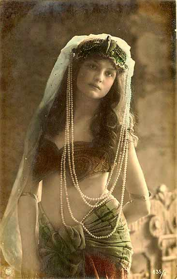
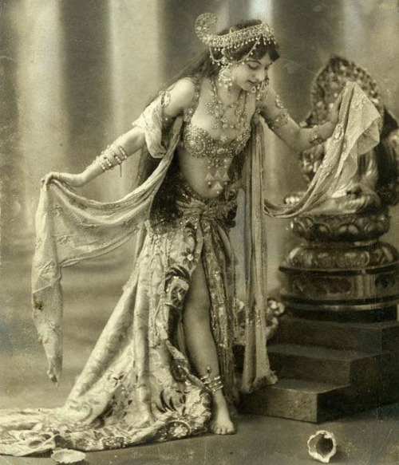

The name Bellydance derives from the French name 'dans du ventre' which literally means dance of the belly. Probably because the belly is left uncovered and gives much accent to the dance. But not everyone agrees on this name and many prefer the term ' Oriental Dance. Linguistically this term is more correct as it expresses the diversity and oriental roots more clearly. Even though the name Bellydance is not loved by everyone, it is the name by which is gained popularity in the west.
The first 'Bellydancing-roots' can be traced back to the Middle- East and Asia. It shows us that this dance goes back more than 6000 years. From templedance to worship and honour what we call God, to rites of passage, fertility and birth dances. One thing is for sure, these dances were designed to connect to a higher power. To release energy and rise above the mundane state of everyday mind. Dance as a means of communication, celebration and connection.
One thing is for sure, these dances were designed to connect to a higher power. To release energy and rise above the mundane state of everyday mind. Dance as a means of communication, celebration and connection.
It is said that nomads are responsible for spreading this dance across the globe. From the Indus valley in India, to Afghanistan, Persia, through Turkey, Egypt and north Africa. Every country took up certain elements and, while making it the specific folk dance of that region, creating a culture that's still very much alive today. This nomadic trade route is also knows as the Silk Road. In the 18th century soldiers discovered this 'scandalous' dance and couldn't keep their eyes of the seductive hips and bare shoulders. They became so fascinated that some dancers were brought to Europe to perform in front of our nobles. Oriental dance became more known to such a degree that even some Western women took up this noblest of all dances. Our own conservative and more rigid style that was uniquely enhanced with waves and shakes- and, very importantly, the pleasure of the dancer herself. It seemed the dance became alive!
The oriental dance developed into a dance that was particularly aimed at amusement and entertainment. From a tribal and folkloric to a dance suited for audience. This was the beginning of the cabaretstyle, as seen at the Moulin Rouge theatre in Paris.
There are several celebrities from all over the globe that made this dance to the Bellydance we know today. Think of Mata Hari, Samia Gamal, Jamila Salimpour and many other visionary artists. These days we are blessed with a wide variety of fusion and cross over styles.
Each of these styles, from folk, classic to fusion branches off into other cross-fusion styles. For example in tribal fusion we see elements from yoga, ballet, cabaret and oriental dance. There are many styles and possible combinations: burlesque, flamenco, bollywood, modern dance etc. Oriental dance as we know it today is incredibly rich in history and repertoire and accessible for every creative mind to interpret in her own marvellous way.
